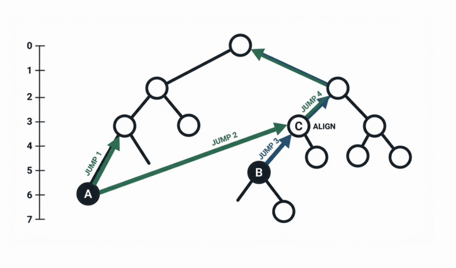
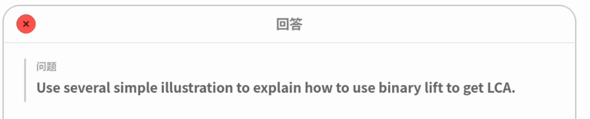

不是弹出一段文字，也不是贴一张图片——是一笔一笔，用你这台 reMarkable 自己的笔迹，写在你刚才写字的地方。
回答是用平板自己的笔画出来的。所以它和你的字并排躺在同一页上，能被橡皮擦掉，能被圈起来，能跟着页面一起翻——它就是墨迹本身。
落笔的位置也是有讲究的：从你上次写字的地方接着往下走，而不是丢在页面正中央，盖掉你自己的东西。
写一句「画一只跑起来的鸣人」，点一下角落，人就落在纸上。讲一个概念时随手要一张示意图，比打字描述半天要快得多。
题目里的图也一样：一条曲线、一块阴影面积、一棵树，它直接画给你看，而不是用文字绕着描述。

读英文原版遇到生词，不用退出、不用切换、不用打字。圈一下，三根手指按一按，释义和一句例句就浮在页面上，读完继续往下读。
每一个你查过的词都被记了下来。点一下右下角，它们按着遗忘曲线一张张回来——在你快要忘掉的那天，而不是在你早就记住之后。
圈住的不只是一个词，而是一整句、一整段，那就给你整段的翻译。它会自己判断你圈的是什么。
把不懂的地方圈起来，五根手指按一下。它会看着这一整页回答你——因为一个问题往往指着旁边的图、上面的推导，光看圈住的那几个字是答不了的。
卡片最上面是它理解的问题。答错了你一眼看得出；更要紧的是「答对了另一个问题」这种情况，没有这一行的话，你只会一头雾水。
上标下标该大就大该小就小，分式有真正的横线，根号罩得住里面的式子。不是一串你得在脑子里翻译的符号。
问一个东西是怎么运转的，回答里可能就浮出一张示意图。Paper Pro 上它还是彩色的。

全部在平板上跑。没有配套 app，没有导入导出，不用插线，也不用先在手机上点一下。
跟着系统一起启动，崩了自己爬起来，放着一星期不管也还认得你的登录状态。
reMarkable 2 和 Paper Pro 都支持。彩色屏上示意图是彩色的，黑白屏上一样看得清。
| 设备 | 下载 |
|---|---|
| reMarkable 2 | rm-agent-*-armv7-unknown-linux-musleabihf |
| reMarkable Paper Pro | rm-agent-*-aarch64-unknown-linux-musl |